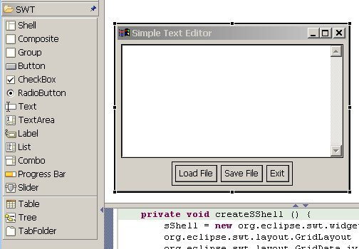
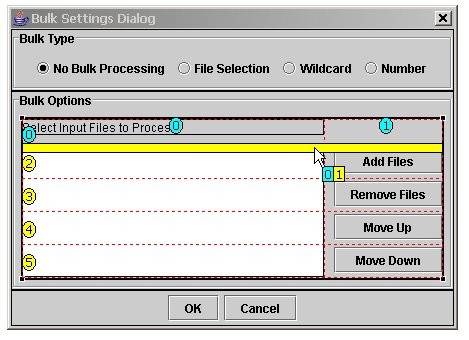
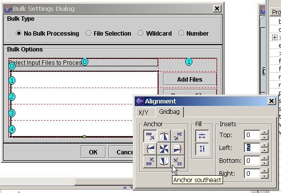
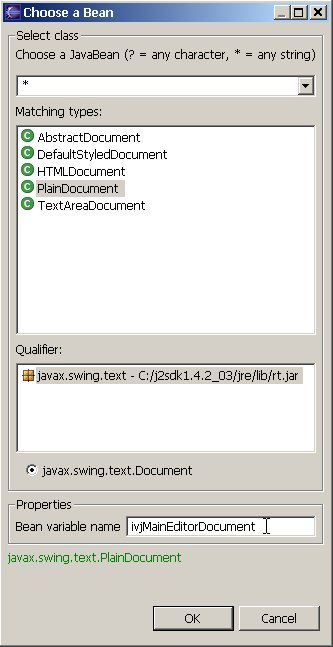
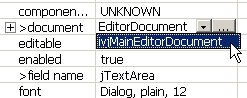
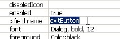
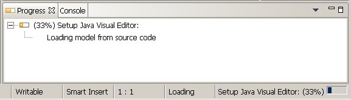
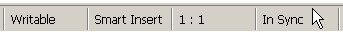
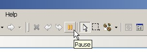

|
|
|
|
Initial SWT Support |
The VE now has initial support for
designing with SWT controls is in place. This includes:
 Those interested in previewing the SWT support should see the
instructions here. |
|
|
|
| GridBagLayout
Editor |
The VE now includes an advanced
editor for Swing/AWT's GridbagLayout. The editor features:

 |
|
|
|
| Object
Reference Editor |
The property sheet now has a default
property editor for object types without a predefined editor.
This generic editor will allow you to choose to drop a new instance of
the required type, or to reference beans that have previously been
dropped.  |
|
|
|
| Field Rename |
You can now rename dropped beans
from the property sheet, without using the refactoring system. By
changing the field name property on the property sheet, the bean's
field and its get method will be renamed, and any references to the
bean will be updated. This is done without the time-consuming
reload process that was necessary in previous versions of the VE.  A full-scale refactoring is still required if the field or get
method are not declared as private. |
|
|
|
|
Editor Progress Information |
Status information is displayed on
the status bar and on the Progress view while the Visual Editor is
busy. Currently this is mostly displayed as the editor is being
launched, but more information messages will be added in later
milestones. To launch the Progress View, double-click on the status line text in the bottom right of the Eclipse window.  |
|
|
|
| Reload
From Scratch Changes |
The types of operations which
automatically invoke a reload from scratch have been reduced
drastically. When a reload does occur, the selection of
components are now maintained when the reload completes. You can now manually invoke a reload from scrach operation by double-clicking in the code synchronization status field on the Eclipse status bar.  Previously it was necessary to pause and resume the code synchronization in order to manually cause a reload from scratch. |
|
|
|
| Code
Synchronization Status |
The code synchronization control
has been moved from the status bar to the Eclipse
toolbar. Use the button to pause the code synchronization when
performing major changes to the source code. The button's icon
will update to indicate when there is a parse error in the source.  |
|
|
|
|
Move to Eclipse 3.0 |
The Visual Editor now runs on Eclipse
3.0 M8. |
|
|
|